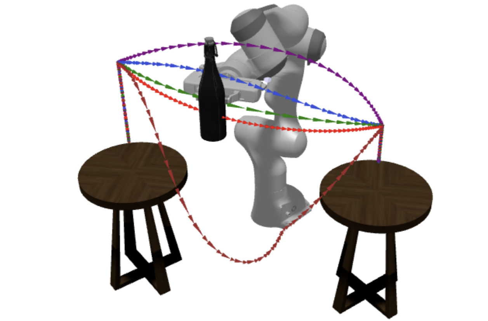

|
Yeping Wang I am a Computer Science PhD Candidate at the University of Wisconsin-Madison, advised by Michael Gleicher. I am currently focused on developing planning and optimization algorithms for both fixed-base and mobile manipulators. I am also interested in human-robot interaction and robot visualization. Previously, I obtained my Master's degree in Robotics from Johns Hopkins University. In Spring 2025, I am doing an internship at Mitsubishi Electric Research Laboratories (MERL) , where I am working with Stefano Di Cairano and Alexander Schperberg on loco-manipulation. yeping@cs.wisc.edu CV | Google Scholar | Github |

|
Publications |
|

|
Motion Comparator: Visual Comparison of Robot Motions
RAL, ICRA'25
PDF
•
Code
We design and build a web-based tool for roboticists to understand, compare, and share robot motions. |
|
|
IKLink: End-Effector Trajectory Tracking with Minimal
Reconfigurations
ICRA'24
PDF •
Poster •
Code
A method for tracking end effector trajectories while taking minimal breaks to reconfigure the arm position. |
|
|
Unlocking the Performance of Proximity Sensors by
Utilizing Transient Histograms
RA-L, ICRA'24
PDF •
Project page •
Video •
Code
We directly utilize low-level information generated by optical time-of-flight sensors to recovery of planar geometry and albedo from a single sensor measurement. |
|
|
RangedIK: An Optimization-Based Robot Motion Generation
Method for Ranged-Goal Tasks
ICRA'23
PDF
• Presentation
• Poster
• Code
A real-time motion generation method that accommodates various types of kinematic requirements within a single, unified framework. |
|
|
Exploiting Task Tolerances in Mimicry-based
Telemanipulation
IROS'23
PDF
•
Poster
We explore task tolerances, i.e., allowable position or rotation inaccuracy, as an important resource to facilitate smooth and effective telemanipulation. |
|
|
Periscope: A Robotic Camera System to Support Remote
Physical Collaboration
CSCW'23
PDF
• Project page
We design, build, and evaluate Periscope, a robotic camera system that allows two people to collaborate remotely on physical tasks. |

|
Understanding Control Frames in Multi-Camera Robot Telemanipulation
HRI'22
PDF
•
Presentation
We investigate the effects of using multiple view-specific control frames in a multi-camera interface on task performance and user experience during robot telemanipulation. |
|
|
See What I See: Enabling User-Centric Robotic Assistance Using First-Person Demonstrations
HRI'20
PDF
•
Presentation
We explore how first-person demonstrations can be utilized to enable user-centric robotic assistance in human-robot collaborative assembly tasks. |